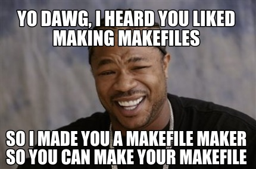
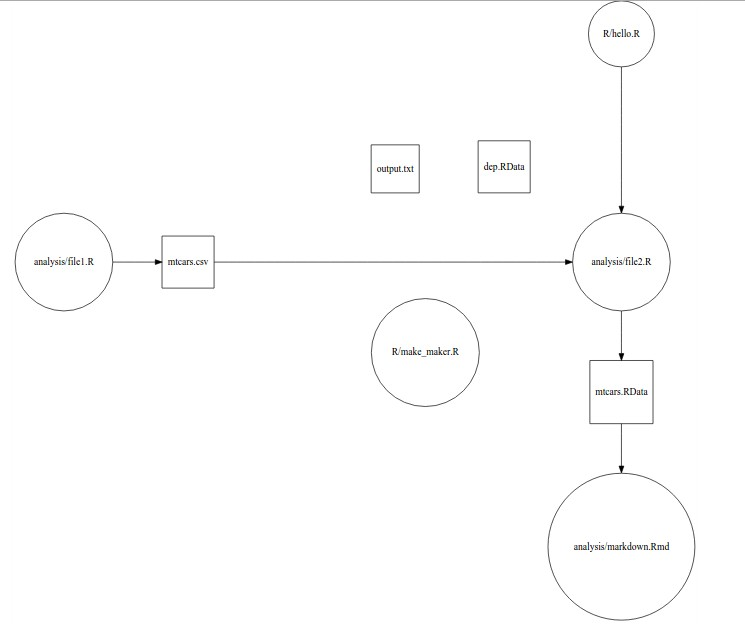

easyMake is a proof of concept for a simple way to generate Makefiles based on an R dataframe listing file dependencies. It is not on CRAN, but you can install it with:
devtools::install.github("https://github.com/GShotwell/easyMake")Gnu Make provides an incredibly powerful way to manage analysis projects. By allow the analyst to specify the way in which files depend on one another you can ensure that your analysis is always up to date, and that files are not being needlessly regenerated if nothing has changed. Using a Makefile is one of the best things that you can do to ensure that your analysis project is robust and reproducible. Writing a Makefile, however, requires learning a new programming paradigm, which is something many R users are uncomfortable with.
Most computer programmers are comfortable with the command line because it’s one of the most common ways that they interact with their computer. R developers, on the other hand, tend to come from non-programming backgrounds and learned to interact with their computer through R scripts. They are often uncomfortable whenever they are required to open up the Terminal (some of us had no idea what the Terminal was when they started programming) and will often give up rather than learn how to use a command line interface.
The goal behind the easyMake package is to provide an interface for generating simple Makefiles which will help people make their projects reproducible, and give them an entry point into more extensive and customized Make programming.
The basic notion of easymake is that one can represent the dependencies within an R project as a directed graph which includes objects, R files, and RMarkdown files. In this model all actions, such as web scraping, or loading a database, are accomplished by running an R script, rather than executing a command directly in the terminal. For instance one dependency graph might look like this:

This graph shows that in this project there is a simple tree structure between various circular R scripts, and various square objects. All the actions in this project are undertaken either by executing an R script, or rendering an R markdown file. To generate this graph, we need two things: a filelist:
filelist <- c("analysis/file1.R", "analysis/file2.R", "analysis/markdown.Rmd",
"dep.RData", "mtcars.csv", "mtcars.RData", "output.txt",
"R/hello.R", "R/make_maker.R")
filelist## [1] "analysis/file1.R" "analysis/file2.R" "analysis/markdown.Rmd"
## [4] "dep.RData" "mtcars.csv" "mtcars.RData"
## [7] "output.txt" "R/hello.R" "R/make_maker.R"and a dataframe which shows the edges between the graph
dependencies <- data_frame(
file = c("analysis/file2.R", "analysis/markdown.Rmd", "mtcars.csv",
"mtcars.RData", "analysis/file2.R"),
pre_req = c("mtcars.csv", "mtcars.RData", "analysis/file1.R",
"analysis/file2.R", "R/hello.R"))
dependencies## Source: local data frame [5 x 2]
##
## file pre_req
## (chr) (chr)
## 1 analysis/file2.R mtcars.csv
## 2 analysis/markdown.Rmd mtcars.RData
## 3 mtcars.csv analysis/file1.R
## 4 mtcars.RData analysis/file2.R
## 5 analysis/file2.R R/hello.RThe graph can then be generated using the graph_dependencies function.
This same dependency edgelist can be used to generate a Makefile by basically running the R file whenever it is less recently modified than its prerequsite. In make terms, the file is the target, the prerequisite is the prerequisite and the command is generated using the following rules:
The easy_make() function simply takes a dependency edge list, and generates a Makefile using this rules. The Makefile produced from the above edgelist looks like this:
analysis/file2.R: mtcars.csv R/hello.R
RScript analysis/file2.R
analysis/markdown.Rmd: mtcars.RData
Rscript -e 'rmarkdown::render(analysis/markdown.Rmd)'
mtcars.csv: analysis/file1.R
RScript analysis/file1.R
mtcars.RData: analysis/file2.R
RScript analysis/file2.RThis workflow does not produce the best possible Makefiles, Make allows you to run many different types of commands which are not availiable in easyMake. There is also a chance that certain dependency graphs will cause an R file to be run more times than is strictly necessary.